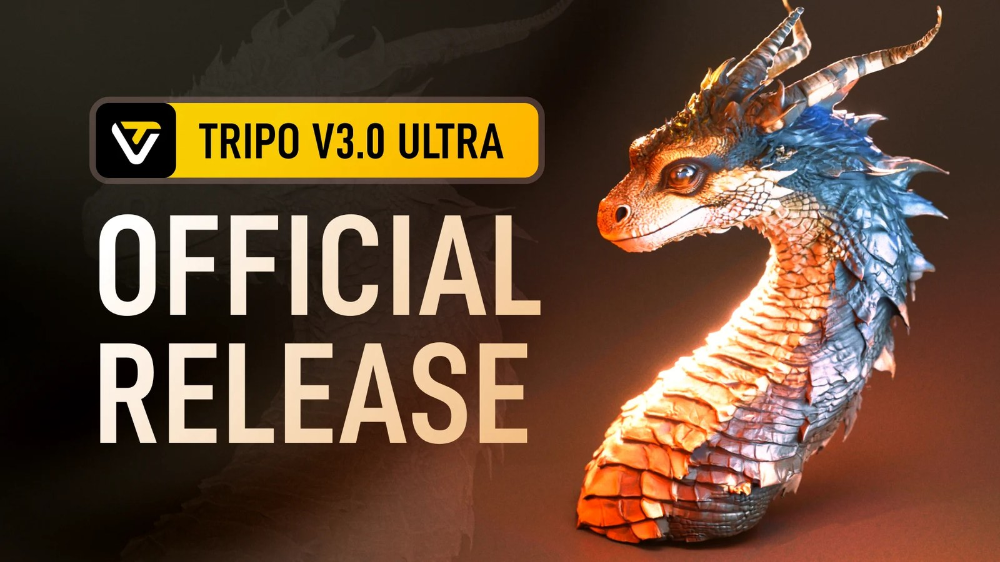

Tripo 3.0 Ultra：高解析幾何與材質管線進入可測 Production 階段
Tripo 3.0 正式版強化銳利邊緣、表面一致性與高解析貼圖，Ultra Mode 可生成最高約 200 萬面，適合先拿 hero prop／雕刻基底做品質上限測試。

Production
★★★★★
成熟度
正式版
先測
Hero Prop
完整分析
Production 判斷
真正值得測的不是面數更高，而是高解析幾何是否能減少 sculpt cleanup、normal baking 與 reference drift；對 hero prop、雕刻基底與展示模型價值最高。
流程建議
用同一組參考做 Standard 與 Ultra A/B，固定輸出後比較 silhouette、薄片結構、hard edge 與貼圖接縫。
限制
高面數不等於 game-ready topology；仍需 retopo、UV、LOD 與引擎端實測。
20 分鐘實測
挑一個機械 Prop，記錄生成到清理與低模化所需時間，和現有 AI 3D 流程直接比較。